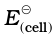
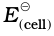

In an electrolytic cell external source of voltage is used to bring about a chemical reaction. The electrochemical processes are of great importance in the laboratory and the chemical industry. One of the simplest electrolytic cell consists of two copper strips dipping in an aqueous solution of copper sulphate. If a DC voltage is applied to the two electrodes, then Cu2+ ions discharge at the cathode (negatively charged) and the following reaction takes place:
Cu2+(aq) + 2e– → Cu (s) (3.28)
Copper metal is deposited on the cathode. At the anode, copper is converted into Cu2+ ions by the reaction:
Cu(s) → Cu2+(s) + 2e– (3.29)
Thus copper is dissolved (oxidised) at anode and deposited (reduced) at cathode. This is the basis for an industrial process in which impure copper is converted into copper of high purity. The impure copper is made an anode that dissolves on passing current and pure copper is deposited at the cathode. Many metals like Na, Mg, Al, etc. are produced on large scale by electrochemical reduction of their respective cations where no suitable chemical reducing agents are available for this purpose.
Sodium and magnesium metals are produced by the electrolysis of their fused chlorides and aluminium is produced (Class XII, Unit 6) by electrolysis of aluminium oxide in presence of cryolite.
Michael Faraday was the first scientist who described the quantitative aspects of electrolysis. Now Faraday’s laws also flow from what has been discussed earlier.
After his extensive investigations on electrolysis of solutions and melts of electrolytes, Faraday published his results during 1833-34 in the form of the following well known Faraday’s two laws of electrolysis:
(i) First Law: The amount of chemical reaction which occurs at any electrode during electrolysis by a current is proportional to the quantity of electricity passed through the electrolyte (solution or melt).
(ii) Second Law: The amounts of different substances liberated by the same quantity of electricity passing through the electrolytic solution are proportional to their chemical equivalent weights (Atomic Mass of Metal ÷ Number of electrons required to reduce the cation).
There were no constant current sources available during Faraday’s times. The general practice was to put a coulometer (a standard electrolytic cell) for determining the quantity of electricity passed from the amount of metal (generally silver or copper) deposited or consumed. However, coulometers are now obsolete and we now have constant current (I) sources available and the quantity of electricity Q, passed is given by
Q = It
Q is in coloumbs when I is in ampere and t is in second.
The amount of electricity (or charge) required for oxidation or reduction depends on the stoichiometry of the electrode reaction. For example, in the reaction:
Ag+(aq) + e– → Ag(s) (3.30)
One mole of the electron is required for the reduction of one mole of silver ions.
We know that charge on one electron is equal to 1.6021× 10–19C.
Therefore, the charge on one mole of electrons is equal to:
NA × 1.6021 × 10–19 C = 6.02 × 1023 mol–1 × 1.6021 × 10–19
C = 96487 C mol–1
This quantity of electricity is called Faraday and is represented by the symbol F.
For approximate calculations we use 1F Y 96500 C mol–1.
For the electrode reactions:
Mg2+(l) + 2e– → Mg(s) (3.31)
Al3+(l) + 3e– → Al(s) (3.32)
It is obvious that one mole of Mg2+ and Al3+ require 2 mol of electrons (2F) and 3 mol of electrons (3F) respectively. The charge passed through the electrolytic cell during electrolysis is equal to the product of current in amperes and time in seconds. In commercial production of metals, current as high as 50,000 amperes are used that amounts to about 0.518 F per second.
A solution of CuSO4 is electrolysed for 10 minutes with a current of 1.5 amperes. What is the mass of copper deposited at the cathode?
Solution
t = 600 s charge = current × time = 1.5 A × 600 s = 900 C
According to the reaction:
Cu2+(aq) + 2e– = Cu(s)
We require 2F or 2 × 96487 C to deposit 1 mol or 63 g of Cu.
For 900 C, the mass of Cu deposited
= (63 g mol–1 × 900 C)/(2 × 96487 C mol–1) = 0.2938 g.
Products of electrolysis depend on the nature of material being electrolysed and the type of electrodes being used. If the electrode is inert (e.g., platinum or gold), it does not participate in the chemical reaction and acts only as source or sink for electrons. On the other hand, if the electrode is reactive, it participates in the electrode reaction. Thus, the products of electrolysis may be different for reactive and inert electrodes.The products of electrolysis depend on the different oxidising and reducing species present in the electrolytic cell and their standard electrode potentials. Moreover, some of the electrochemical processes although feasible, are so slow kinetically that at lower voltages these do not seem to take place and extra potential (called overpotential) has to be applied, which makes such process more difficult to occur.
For example, if we use molten NaCl, the products of electrolysis are sodium metal and Cl2 gas. Here we have only one cation (Na+) which is reduced at the cathode (Na+ + e– → Na) and one anion (Cl–) which is oxidised at the anode (Cl– → ½Cl2 + e– ) . During the electrolysis of aqueous sodium chloride solution, the products are NaOH, Cl2 and H2. In this case besides Na+ and Cl– ions we also have H+ and OH– ions along with the solvent molecules, H2O.
At the cathode there is competition between the following reduction reactions:
Na+ (aq) + e– → Na (s)  = – 2.71 V
H+ (aq) + e– → ½ H2 (g) = 0.00 V
The reaction with higher value of EJ is preferred and therefore, the reaction at the cathode during electrolysis is:
H+ (aq) + e– → ½ H2 (g) (3.33)
but H+ (aq) is produced by the dissociation of H2O, i.e.,
H2O (l) → H+ (aq) + OH– (aq) (3.34)
Therefore, the net reaction at the cathode may be written as the sum of (3.33) and (3.34) and we have
H2O (l) + e– → ½H2(g) + OH– (3.35)
At the anode the following oxidation reactions are possible:
Cl– (aq) → ½ Cl2 (g) + e– = 1.36 V (3.36)
2H2O (l) → O2 (g) + 4H+(aq) + 4e– = 1.23 V (3.37)
The reaction at anode with lower value of E⊖ is preferred and therefore, water should get oxidised in preference to Cl– (aq). However, on account of overpotential of oxygen, reaction (3.36) is preferred. Thus, the net reactions may be summarised as:
NaCl (aq) Na+ (aq) + Cl– (aq)
Cathode: H2O(l) + e– → ½ H2(g) + OH– (aq)
Anode: Cl– (aq) → ½ Cl2(g) + e–
Net reaction:
NaCl(aq) + H2O(l) → Na+(aq) + OH–(aq) + ½H2(g) + ½Cl2(g)
The standard electrode potentials are replaced by electrode potentials given by Nernst equation (Eq. 3.8) to take into account the concentration effects. During the electrolysis of sulphuric acid, the following processes are possible at the anode:
2H2O(l) → O2(g) + 4H+(aq) + 4e– = +1.23 V (3.38)
2SO42– (aq) → S2O82– (aq) + 2e– = 1.96 V (3.39)
For dilute sulphuric acid, reaction (3.38) is preferred but at higher concentrations of H2SO4, reaction (3.39) is preferred.
Intext Questions
3.10 If a current of 0.5 ampere flows through a metallic wire for 2 hours, then how many electrons would flow through the wire?
3.11 Suggest a list of metals that are extracted electrolytically.
3.12 Consider the reaction: Cr2O72– + 14H+ + 6e– → 2Cr3+ + 7H2O
What is the quantity of electricity in coulombs needed to reduce 1 mol of Cr2O72–?